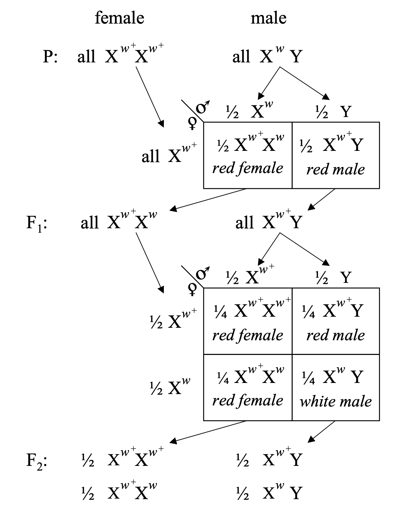
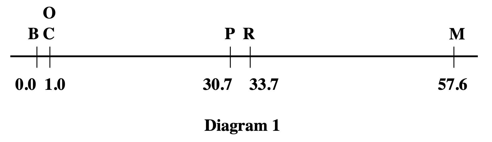
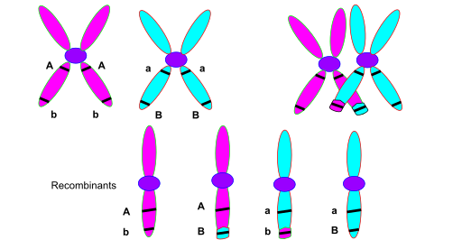

BSMS205 · Genetics
From Mendel to Morgan
Chapter 22 · Part IV · Population Genetics
Welcome to Chapter twenty-two, From Mendel to Morgan, The Discovery of Linkage. In the previous chapter we talked about why the same variant can have different frequencies in different populations. Today we turn to a different question: on a single chromosome, which variants travel together? The answer starts with Mendel and a rule he thought was universal. And it ends with a young undergraduate who, in one night, invented modern genetic mapping.
Today's central question
When are two variantsinherited together ,
Here is the question. You have two variants at two different places in the genome. When does an offspring inherit both together, as a pair? When are they separated? Mendel said the answer is simple — they always separate independently. Morgan discovered the answer is much more interesting. And understanding it gives us a tool for locating genes, even when we cannot see them.
Mendel's second law
Independent assortment : different gene pairs segregate independently during gamete formation.
Predicts the classic 9 : 3 : 3 : 1 ratio in F2
Round yellow × wrinkled green → predictable distribution
Let's start where Mendel left us. His second law, the law of independent assortment, says that different gene pairs segregate independently during gamete formation. The famous consequence is the nine to three to three to one ratio in the F two generation when you cross two dihybrids. If you cross round yellow peas with wrinkled green peas, the F two generation shows nine round yellow, three round green, three wrinkled yellow, and one wrinkled green. The seed shape and the seed colour act as if they do not know about each other. That was Mendel's claim.
Mendel got lucky
Peas have seven chromosome pairs
The seven traits Mendel picked were on different chromosomes
So they really did assort independently
If he had picked two traits on the same chromosome …
…he would have found something entirely new.
Here is the historical footnote that most people miss. Mendel studied seven traits in peas. Peas happen to have seven pairs of chromosomes. And the seven traits Mendel happened to pick each sit on a different chromosome. That is why independent assortment worked perfectly for him. If he had chosen two traits on the same chromosome, he would have seen very different ratios, and the history of genetics would have taken a different path. Mendel's universal rule was an artefact of his trait selection.
Why independent assortment happens
During meiosis I , homologous chromosome pairs line up at the equator
Which member of each pair goes to which pole: random
Genes on different chromosomes shuffle independently
But genes on the same chromosome ?
Why does independent assortment happen for genes on different chromosomes? Because of how chromosomes behave during meiosis one. When a cell makes eggs or sperm, homologous chromosome pairs line up at the cell's equator, and then each pair is pulled apart. Which member of each pair goes to which pole is completely random. So chromosome one from your mother might go to one pole, while chromosome two from your father also goes to that pole, or to the other. The combinations shuffle randomly, and so genes on different chromosomes end up independently assorted. The interesting question is: what happens for genes on the same chromosome? If they sit on the same physical DNA molecule, shouldn't they travel together?
Roadmap for today
Early clues · 1906 sweet peas
Morgan's fly room · the white-eyed male
Discovery of linkage
Sturtevant · the first genetic map
The mechanism · crossing over
Linkage in humans
Here is how the story unfolds. First, early clues in nineteen oh-six with sweet peas. Second, Morgan's fly room at Columbia and the discovery of the first X-linked gene. Third, the discovery of linkage itself. Fourth, Sturtevant's insight turning recombination into a ruler — the first genetic map. Fifth, what is physically happening during meiosis to produce recombination. And sixth, how all of this applies to humans, and how it was used to map disease genes before the Human Genome Project. Let's begin.
§ 1
Early Clues ·
Let's begin with the first observations that broke Mendel's second law.
Sweet peas · two traits that refused to separate
Bateson & Punnett in the UK · sweet peas
Flower colour × pollen shape → expected 9:3:3:1
Observed: purple + long and red + round dominated
Traits were traveling together
In nineteen oh-six, two British geneticists, Bateson and Punnett, were studying sweet peas. They were looking at two traits: flower colour, purple versus red, and pollen shape, long versus round. If Mendel's law of independent assortment held, the F two generation should have shown the classic nine to three to three to one ratio. But it did not. Instead, the parental combinations dominated. When the purple flower allele showed up, it usually brought the long pollen allele with it. When the red flower allele appeared, it usually brought the round pollen allele. The four possible combinations were not appearing in equal proportions. The traits were traveling together.
Coupling and repulsion
Coupling
Traits inherited together more than expected
Purple + long pollen
Repulsion
Traits separate more often than expected
No good explanation yet
They knew it was an exception. They could not yet explain it.
Bateson and Punnett coined two terms for what they observed. Coupling referred to traits that were inherited together more often than expected. Repulsion was the opposite — traits that separated more often than you would predict from chance. They documented the pattern rigorously, but they could not explain the mechanism. They knew they had found an exception to Mendel's law. They did not yet know why. The answer would require several more years of work — and an understanding of chromosomes that did not yet exist.
What they had actually discovered
Some genes are physically connected — on the same chromosome — so they tend to travel together in inheritance.
But in 1906, no one understood chromosomes well enough to say this.
In hindsight, what Bateson and Punnett had discovered was the physical reality of genes. Some genes are physically connected, because they lie on the same chromosome. A chromosome is a single DNA molecule. Genes on the same chromosome have no choice but to travel together when that chromosome is pulled into a gamete — except when something special happens to separate them. But in nineteen oh-six, nobody understood chromosomes well enough to make that connection. The answer required the arrival of Thomas Hunt Morgan and his fruit flies.
§ 2
Morgan's Fly Room ·
Let's walk into Morgan's fly room, one of the most famous rooms in the history of biology.
A skeptic turns to flies
Thomas Hunt Morgan · embryologist at Columbia
Initially doubted chromosomes had a role in heredity
Started breeding Drosophila melanogaster in milk bottles
The cramped lab became legendary — the Fly Room
The protagonist is Thomas Hunt Morgan, an embryologist at Columbia University. Morgan was initially a skeptic. He was not convinced that chromosomes had anything to do with heredity. To test the idea, he started breeding fruit flies — Drosophila melanogaster — in milk bottles in a cramped laboratory that came to be known as The Fly Room. Morgan chose fruit flies for practical reasons. They breed fast — a new generation every two weeks. They produce hundreds of offspring per cross. And they are cheap to maintain. These practical advantages turned out to matter enormously.
A single white-eyed male · 1910
Among thousands of red-eyed flies · one male with white eyes
A spontaneous mutation — never seen before in the stock
Morgan immediately recognised its value
Bred with normal red-eyed females
In nineteen ten, something extraordinary turned up in the fly room. Among thousands of normal red-eyed flies, one single male appeared with white eyes. This was a spontaneous mutation — a new variant that had never been observed in the fly stock before. Morgan recognised its significance immediately. A new heritable trait that breeds true could be used as a marker to track inheritance. He crossed this white-eyed male with normal red-eyed females and began watching the offspring carefully.
The unexpected F2 pattern
F1 : all red-eyed — red is dominant, Mendel works so farF2 : half of the males have white eyesF2 : no females have white eyesThis was not a 3:1 ratio. It was tied to sex .
Here is what Morgan saw. The F one generation was straightforward — all offspring had red eyes. That fits Mendel. Red is dominant. But the F two generation broke the pattern. About half the males had white eyes, and zero females had white eyes. This was not a three to one ratio. It was something new — something tied to sex. Why would a single gene show different behaviour in males versus females? Morgan had to explain that.
The X-chromosome explanation
Females: XX · Males: XY
Hypothesis: the eye-colour gene sits on the X chromosome
Males have only one X — no second copy to mask the white allele
F2 males carrying the white X → white eyes
Morgan's explanation was elegant and immediately testable. Females have two X chromosomes. Males have one X and one Y. If the eye-colour gene sits on the X chromosome, the pattern falls into place. The original white-eyed male had the white allele on his single X. The F one females inherited one white X from their father and one red X from their mother — they looked red because red is dominant. The F one males inherited their mother's red X and their father's Y — so all F one males were red. Then in the F two generation, some males inherited the white X from their F one mothers. With only one X and no way to mask the recessive white allele, those males appeared white-eyed. Every detail of the observed pattern was now explained.
Morgan 1910 · a gene lives on a chromosome

Morgan's original 1910 diagram · X-linked inheritance of the white-eye mutation in Drosophila .Science · public domain.
This is Morgan's original nineteen ten figure. It traces the inheritance of the white-eye allele through three generations. Look carefully — you can see red-eyed and white-eyed parents in the P generation, all red offspring in the F one generation, and then in F two the split between red females, red males, and white males. But only males are white. This single experiment showed for the first time that a specific gene lives on a specific chromosome — the X. This was a revolution. Before this, Mendel's factors were abstract entities. After this, genes were physical things with physical addresses on physical chromosomes. Chromosomal genetics had begun.
§ 3
Discovery of Linkage
Once one X-linked gene was found, the fly room found more. And when they crossed flies differing in two X-linked traits at once, something fascinating emerged.
Two X-linked traits at once
Parents: red eyes · normal wings × white eyes · miniature wings
Expected (Mendel): four combinations, equal frequencies
Observed: parental combinations dominate
Red + normal and white + miniature → overrepresented
Red + miniature and white + normal → rare
More X-linked genes were discovered — genes for wing shape, body colour, and other traits. Morgan's group then crossed flies that differed in two X-linked traits at the same time. For example, red eyes with normal wings crossed with white eyes with miniature wings. If Mendel's second law held, the four possible combinations in the offspring should appear in equal frequencies. But they did not. The parental combinations — red with normal, and white with miniature — dominated. The recombinant types — red with miniature, and white with normal — were rare. The traits were clearly linked.
Linkage · the physical explanation
Genes on the same chromosome are physically connected .
Like passengers on the same bus
They generally arrive at the same destination
But occasionally, something breaks the linkage…
The explanation Morgan proposed was beautifully physical. Genes on the same chromosome are literally part of the same DNA molecule. During meiosis, when chromosomes line up and then segregate, linked genes travel together. You can think of them as passengers on the same bus. Unless something special happens, they arrive at the same stop. This was the concept of genetic linkage. But there is a key word in that sentence. Unless. Because sometimes the linkage does get broken — and what breaks it is one of the most beautiful phenomena in genetics.
The key insight · crossing over
During meiosis, homologous chromosomes physically exchange DNA segments
Two trains running parallel · they swap cars
A crossover between two linked genes breaks the linkage
This creates recombinant offspring
The mechanism that breaks linkage is called crossing over. During meiosis, homologous chromosomes pair up and physically exchange segments of DNA. Imagine two trains running parallel to each other, briefly touching, and swapping a few cars. When a crossover lands between two linked genes, it separates them. An allele that started on one chromosome ends up on the other. This is what creates recombinant offspring — offspring with new combinations of parental alleles that were not present in either parent's original genotype. Morgan proposed this mechanism, and the rate of recombinant offspring was the experimental evidence.
The crucial observation
The closer two genes are on a chromosome,less likely a crossover will land between them.
Adjacent genes → almost always stay linked
Distant genes → separated more often
Distance is proportional to recombination frequency
Here is the observation that changed everything. The closer two genes are on a chromosome, the less likely a crossover will land between them. Genes that are right next to each other almost never recombine — their alleles almost always stay linked. Genes that are far apart experience more crossovers between them and recombine more often. In other words, physical distance on the chromosome is proportional to recombination frequency. This simple relationship is about to become the foundation of an entire new field of science.
§ 4
Sturtevant's Insight ·
And now for my favourite moment in the history of genetics. An undergraduate student, one night in nineteen eleven, turned recombination into a ruler.
One undergraduate, one night, 1911
"Recombination frequency can measure distance ."
Alfred Sturtevant · undergraduate in Morgan's lab
Went home with the data
By morning · the first genetic linkage map
Alfred Sturtevant was an undergraduate in Morgan's laboratory. He was listening to the discussions about linkage and recombination frequencies when an idea struck him. If recombination frequency is proportional to physical distance, then you could use recombination as a ruler. You could measure the distances between genes. You could build a map. Sturtevant took the data home with him that night. He worked through it. And by morning, he had constructed the very first genetic linkage map in human history. It showed six sex-linked genes on the Drosophila X chromosome, in their linear order, with distances between them.
The unit: centiMorgan
1% recombination = 1 centiMorgan (cM)
Defined by Sturtevant, later named after Morgan
A genetic unit of distance — not a physical one
Still in universal use today
Sturtevant defined the unit of genetic distance. One percent recombination equals one map unit, which was later named the centiMorgan in honour of his mentor. Note that the centiMorgan is a genetic unit, not a physical unit. It is measured by how often two loci recombine, not by how many base pairs separate them on the DNA. The relationship between genetic and physical distance is not uniform across the genome — some regions are hotspots for recombination, others are cold — but the centiMorgan has remained the workhorse unit of genetic mapping for more than a hundred years.
How to infer gene order
Genes A and B: 10% recombination → 10 cM apart
Genes B and C: 5% recombination → 5 cM apart
Genes A and C: ~15% recombination → consistent with A–B–C order
Gene order: A — B — C
Here is how you build a map. Suppose you are studying three genes, A, B, and C, all on the same chromosome. You cross flies and count recombinants for each pair. You find that A and B recombine at ten percent, so they are ten centiMorgans apart. B and C recombine at five percent, so they are five centiMorgans apart. Then you check A and C. If B is between A and C, then the distance from A to C should be roughly the sum, fifteen percent. When you do the experiment, that is what you find. The consistency of pairwise distances determines the linear order: A, then B, then C. This is how Sturtevant reconstructed the order of six genes on the X chromosome in a single night.
Sturtevant 1913 · the first genetic map

Six sex-linked genes on the Drosophila X chromosome · distances in map units.linearly on chromosomes, like beads on a string.
Sturtevant 1913, J. Exp. Zool. · public domain.
This is Sturtevant's original nineteen thirteen figure, showing the first genetic linkage map. Six sex-linked genes on the Drosophila X chromosome, arranged in their linear order, with distances labelled in map units. Look at the positions zero, one, thirty point seven, thirty-three point seven, and fifty-seven point six. Notice that two genes, C and O, are placed at the same position — because they showed complete linkage and no recombination could be detected between them in thousands of flies. This figure proved three things at once. Genes are arranged linearly along the chromosome. Recombination frequency reflects physical distance. And you can map genes without ever seeing them under a microscope. You just need to count offspring.
§ 5
How Crossing
Let's now zoom in on the physical mechanism of crossing over.
Meiosis I · homologues pair up
Each chromosome has already replicated → two sister chromatids
Homologous pairs align side by side
At various points they physically touch → chiasmata
Non-sister chromatids exchange DNA segments
Crossing over happens during meiosis one. At this stage, each chromosome has already replicated, so it consists of two sister chromatids joined at the centromere. Homologous chromosomes then pair up side by side, forming what is called a bivalent. At various points along their length, the chromosomes physically touch. These contact points are called chiasmata — singular chiasma. At each chiasma, non-sister chromatids, one from the maternal chromosome and one from the paternal chromosome, exchange DNA segments. This is the physical event of crossing over. It is not a metaphor. The DNA is literally cut and rejoined.
The crossover · visualised

Two homologous chromosomes (blue, red), each with two sister chromatids, exchange segments at a chiasma.recombinant chromatids per crossover.
Source: Wikimedia Commons · CC BY-SA 3.0.
Here is the crossover visualised. The blue chromosome and the red chromosome are homologous — they carry the same genes, but different alleles. Each is already duplicated into two sister chromatids. They pair up. At the crossover point, one chromatid from each homologue exchanges a segment with the other. After the crossover, four chromatids exist. Two are parental — entirely blue or entirely red. Two are recombinant — part blue, part red. These four chromatids are packaged into four different gametes. If two genes sit on opposite sides of the crossover point, they end up in different gametes.
Two endpoints of the spectrum
Very close genes
~0%
Tightly linked
Almost always together
Distant / different chromosomes
50%
Independent assortment
Back to Mendel
Two endpoints anchor the recombination spectrum. At one end, genes that are very close on the same chromosome. Crossovers between them are so rare that the recombination frequency approaches zero. These genes are said to be tightly linked and are almost always inherited together. At the other end, genes that are far apart on the same chromosome, or on completely different chromosomes. These recombine at approximately fifty percent. That is the ceiling. No matter how far apart two genes are, recombination frequency cannot exceed fifty percent, because at fifty percent they are assorting independently — which is exactly what Mendel observed. So Mendel's second law holds, but only as a special case at the high end of the distance spectrum.
Linkage group = one chromosome
Every chromosome defines a linkage group
All the genes on it tend to be inherited together
Humans have 23 linkage groups — 22 autosomes + X
A related concept: the linkage group. Every chromosome defines one linkage group — the set of all genes physically connected on that chromosome. The genes in a linkage group tend to be inherited together, with deviations from that rule caused by crossing over. Humans have twenty-three linkage groups — twenty-two autosomes plus the X chromosome. Each linkage group is a separate physical domain of inheritance.
Double crossovers and interference
Two crossovers in the same region → can cancel each other out
A–B–C · crossover in A–B and another in B–C → A and C appear unrecombined
Interference : one crossover suppresses another nearbyLong-distance recombination is less than sum of short-distance parts
One final complication. Sometimes two crossovers happen in the same chromosome region. If a crossover occurs between genes A and B, and another occurs between genes B and C, the two events can effectively cancel each other out — A and C end up together again, even though two exchanges actually happened. Sturtevant also discovered that crossovers are not independent of each other. One crossover makes another nearby crossover less likely. This is called interference. It is as if the chromosome, once cut and repaired at one spot, resists being cut again nearby. The practical consequence is that long-distance recombination frequencies are always less than the simple sum of the short-distance recombination frequencies in between. Linear additivity only works over short ranges.
§ 6
Linkage in Humans
All of this was discovered in flies. How did it come to apply to humans?
No crosses, only families
We cannot do controlled crosses with people
Geneticists studied families and tracked co-inheritance patterns
1930s · nail-patella syndrome linked with ABO blood group
Same chromosome — chromosome 9
With humans, we cannot do controlled crosses for obvious ethical reasons. So geneticists had to work with families. You would track which alleles at various markers were inherited along with a disease, and then infer which regions of the genome were involved. One early success came in the nineteen thirties. Researchers noticed that nail-patella syndrome, a disorder affecting fingernails and kneecaps, was co-inherited with the A B O blood group more often than you would expect by chance. This was one of the first demonstrations of linkage in humans. Both loci turned out to be on chromosome nine.
Building the human linkage map
Markers: blood groups → proteins → microsatellites → SNPs
Each generation of markers: denser maps
By the 1990s · maps dense enough to locate disease genes
Over the twentieth century, the density of human genetic markers kept increasing. In the early years it was blood groups, then protein polymorphisms, then microsatellites — short repetitive DNA sequences with variable lengths — and finally single-nucleotide polymorphisms, or S N Ps. Each generation of markers allowed denser linkage maps. By the nineteen nineties, the maps were dense enough to locate disease genes across the genome.
Linkage mapping · finding disease genes
Disease runs in a family · causal gene unknown
Check every marker: which one co-segregates with the disease?
Gene is close to that marker
Search narrows from 3 billion bp → a few million bp
Successes: cystic fibrosis (chr 7) · Huntington's disease (chr 4)
The logic of linkage mapping for disease genes is simple. A disease runs in a family. You do not know which gene causes it. You have a panel of genetic markers scattered across the genome. For each marker, you ask: is this marker inherited along with the disease more often than expected by chance? If yes, the disease gene must be on the same chromosome, close to that marker. You have narrowed your search from the entire three billion base pair genome to a chromosomal region of perhaps a few million base pairs. Before the Human Genome Project, linkage mapping was one of the only ways to find disease genes. Its biggest successes include cystic fibrosis, mapped to chromosome seven, and Huntington's disease, mapped to chromosome four. These discoveries transformed medical genetics.
From flies to genomes · same logic
Today: whole-genome genotyping and sequencing
Millions of SNPs · hundreds of thousands of people
Modern maps: recombination hotspots , haplotype blocks, LD
Underlying logic: unchanged since Sturtevant 1913
Today we do not cross flies and count offspring. We sequence entire genomes and directly observe which DNA segments are inherited together across thousands of people. Modern recombination maps are built from millions of S N Ps genotyped in large populations. We can identify recombination hotspots — narrow regions where most crossovers happen. We can build haplotype maps — the blocks of correlated variants inherited as units. And we can study linkage disequilibrium, the statistical association between alleles at different loci, which reflects both recombination history and population history. But the underlying logic is exactly the same as Sturtevant's in nineteen thirteen. Physically close variants travel together. Distant variants separate. Recombination is the ruler.
§ 7
Summary
Let's wrap up with the core takeaways.
What to take away
Mendel's second law breaks for genes on the same chromosome
Morgan 1910 · genes are physical · located on chromosomes
Crossing over during meiosis breaks linkage and makes recombinantsRecombination frequency = genetic distance (1% = 1 cM)
Sturtevant 1913 · the first genetic map · still the template
Five takeaways. One. Mendel's second law, independent assortment, breaks down for genes on the same chromosome. Linked genes tend to be inherited together. Two. Morgan's nineteen ten experiment with the white-eyed male fly showed that genes are physical entities with specific chromosomal locations. Genetics became chromosomal. Three. Crossing over during meiosis is the physical mechanism that breaks linkage and creates recombinant offspring. Chiasmata between non-sister chromatids. Four. Recombination frequency measures genetic distance, with one percent equalling one centiMorgan. This is the ruler that built the first century of genetic maps. Five. Sturtevant's nineteen thirteen map of the fly X chromosome remains the template for every genetic map since, from flies to humans to every species we study today.
Why this matters · still
Disease gene mapping — cystic fibrosis, Huntington's, thousands moreHaplotype blocks — the basis of imputation in modern GWASLinkage disequilibrium — statistical correlation of nearby variantsEvery modern population genetics paper rests on these 1910–1913 discoveries
Why does any of this still matter in the era of whole-genome sequencing? Four reasons. First, disease gene mapping built the foundation of medical genetics, and the logic is still used today for rare disorders. Second, haplotype blocks — regions of the genome inherited as units because of low internal recombination — are the basis of imputation, the statistical technique that lets us predict unmeasured genotypes from measured ones. Without imputation, modern G W A S would not exist. Third, linkage disequilibrium, the statistical correlation of nearby variants, is the key object of population genetics and association testing. And fourth, every modern paper in human population genetics implicitly rests on the nineteen ten to nineteen thirteen discoveries. Morgan showed genes are physical. Sturtevant showed distance can be measured. Everything else in this field builds on those two insights.
Next lecture
From linkage to haplotypes recombination hotspots
Chapter 23 · Recombination, Linkage, and Haplotype
Where do we go from here? Morgan and Sturtevant gave us the foundation. But the modern story has more structure. Recombination does not happen uniformly along the chromosome — there are hotspots and coldspots. Blocks of tightly linked variants form haplotypes that behave like single units in the population. Linkage disequilibrium has a decay pattern that records demographic history. Chapter twenty-three, Recombination, Linkage, and Haplotype, picks up exactly there. See you next time.